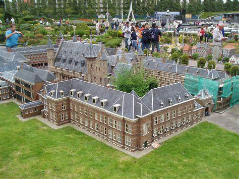
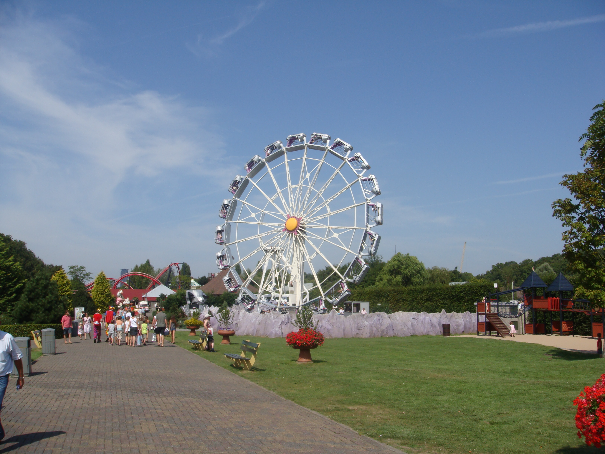

- Meer dan 500.000 inwoners
- Regeringsstad
- Hoofdstad van de provincie Zuid Holland
- Veel groen
- Ligt aan zee
Madurodam is een Nederlandse miniatuurstad in Den Haag op een schaal van 1 op 25, geopend op 2 juli 1952 aan het George Maduroplein. Dit toeristische attractiepark trekt jaarlijks circa 600.000 betalende bezoekers. Het park beslaat een totaaloppervlak van 62.630 m².
Familiepark Drievliet is ontstaan op een Rijswijkse buitenplaats en is een attractiepark voor overwegend jeugdige bezoekers in het Nederlandse Den Haag geworden.